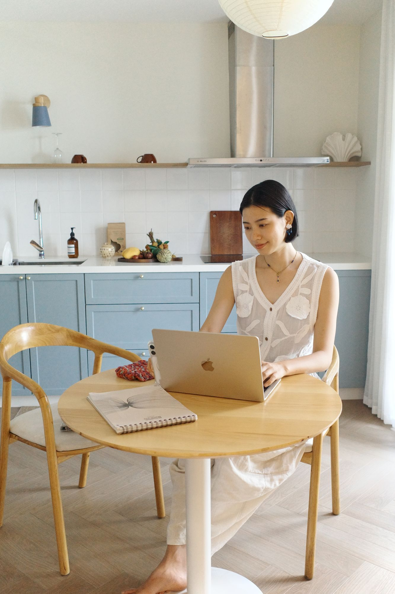
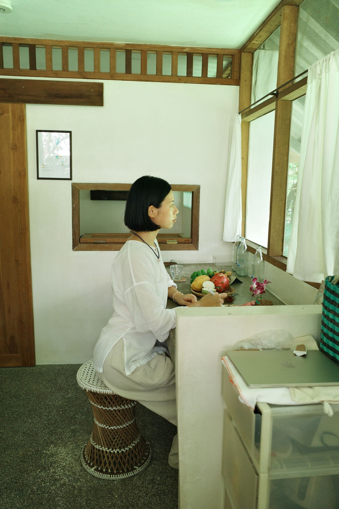
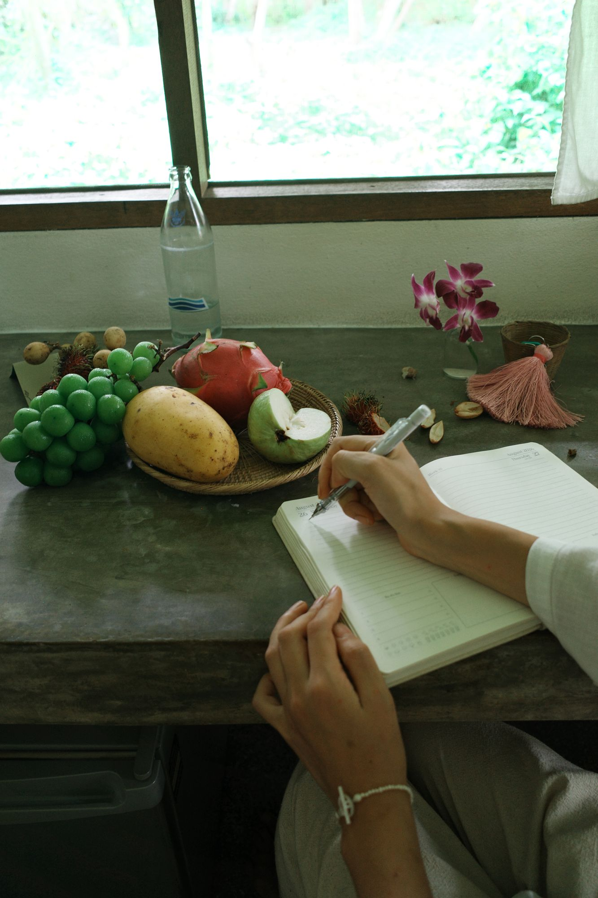
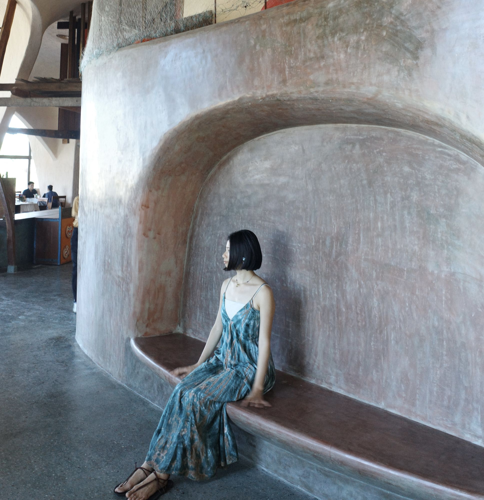
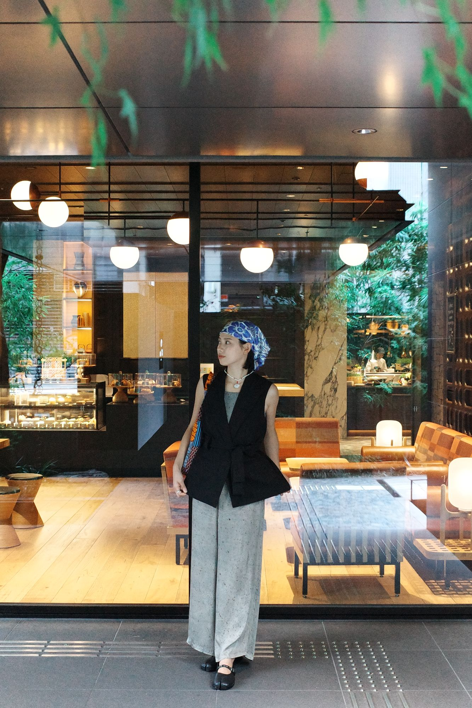
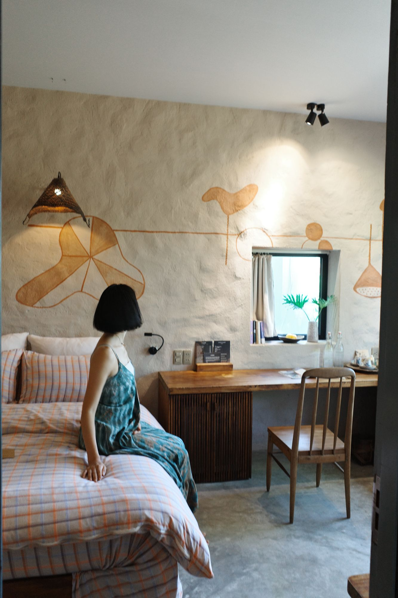
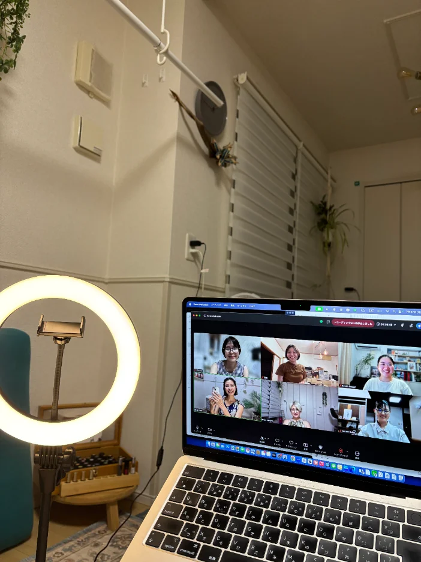
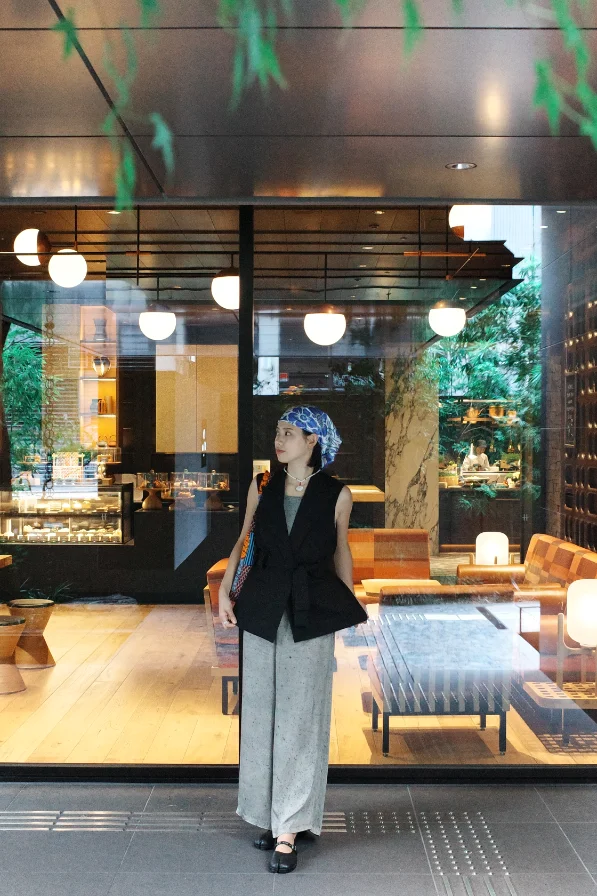

わかりやすくてすっと頭に入ってきます
パソコンや細かい作業など得意でない私ですが、優しく教えてくれる説明はわかりやすくてすっと頭に入ってきます。難しく捕えていた事が、楽しくわくわくしながら学べる最高の場所ですね。
自分らしい働き方を。
AI・ツール活用からお仕事のリアルまで、まるっとシェア。

※ これはうさしほの実際の話です。うさとあそ部に参加することでこのようになれるという変化の保証はしていません。
大切なのは、自分はどうありたいか？
自分の軸を磨き、自分らしく働き、あそぶように生きる人を、自分も含め増やしていきたい。





全国・海外を旅しながら、その土地の文化や暮らしに触れ、そこでの気づきを発信や活動の種に。
ホテルも海外も、好きな場所がオフィスに。
旅費は仕事でまかなって、暮らすようにゆっくり旅する。
「お金がないから行けない」じゃなく、「どうしたら行ける？」から考える。旅費もペイできる旅に。
自分の世界観を大切に。
サイト、LP、投稿、動画、教材、企画をAIと一緒にブラッシュアップ。
受けたい講座や学びには、時間もお金も惜しまない。
都会じゃなくても、自分らしく働ける。
オンラインコミュニティのおかげで、田舎にいてもひとりじゃない。
わたしが目指したのは、たくさん働くことじゃなくて
“人生を楽しむために働く”
暮らし。
AIは、その暮らしを叶える大切な相棒です。
ちなみに、このサイトもAIでつくりました。
うさとあそ部では、こんなスキルも学べます🐰
「難しく捉えていた事が、
楽しくわくわくしながら学べる最高の場所」
自分らしい働き方をつくる人のためのコミュニティ

私が大切にしているのは「自由」。
時間、場所、働き方——
自分で選べるからこそ、
旅をしたり、田舎でのんびり暮らしたり、
自分らしい毎日を過ごすことができています。
AIやデジタルは、
その自由な時間を生み出してくれる道具。
でも大事なのは、ツールそのものじゃなく、
「どう働きたいか」「どう生きたいか」を
自分で考え、選んでいくこと。
うさとあそ部は、
「答えをもらう場」ではなく
「自分で自分に合った選択をし、
答えを見つける場」。
うさしほのリアルな働き方の裏側をシェアしながら、
それぞれが自分のペースで日々に活かしたり、
「自分らしい働き方」を追求していく
コミュニティです。
うさしほの想い
「たのしく働く」を選ぶ。
がんばりすぎず、
でも自分の人生には真剣に。
好きなことを仕事にして、
旅しながら、猫と暮らしながら、
自由に働く毎日を選んでいます。
「こうしたい」がまだぼんやりでも大丈夫。
うさとあそ部は、
わたしのリアルな裏側を見たり、
仲間の話を聞いたりしながら、
「あ、わたしはこうしたいのかも」に
気づいていける場所です。
うまくいったことも、失敗も、
ぜんぶシェアしてます。
一緒にたのしく働きましょ〜！
うさしほ ／ うさとあそ部 主宰

旅しながら自由に働く
うさしほ
合同会社Kitone 代表
千早赤阪村（大阪唯一の村）在住
起こることは全てベストタイミング。
やりたいこと、楽しいことして生きていこ〜！
ずぼらだけど、真剣に自分の人生を生きたい。
そんな仲間と一緒に、深めていきたいなぁ🐰
ゆるっと距離が近く、分かりやすく、やさしいZoom講座だとご好評いただいてます☺️
好き・興味のあること
資格
入院を経ての気づきは、
「知識や正解にとらわれるのではなく、自分の心の声を聴いて生きよう！」ということ。
一時は、
うさとあそ部を一旦終わりにすることも考えました。
でも、ワクワクしながら働くこと、
旅しながらでも自由にお仕事をすること、
そして、人生を豊かにするために
AIや💻📱を使うことは今後もやめない。
わたしはどうしても
人生の本質や豊かさを追求しがち。
だから、AIに頼りすぎず、
自分軸を大切にするマインドも含めて、
求めている方にお伝えしていこう！
という思いが強くなりました。
2025年までしていた半年スクールを一旦お休みし、
2026年はうさとあそ部（＆ずぼら部）に
もっとエネルギーを注ごう！
そしてリアルのつながりを大切にしよう、
と改めて思いました。
共通して大切にしてほしいこと
実際に参加されている方の声をご紹介します
パソコンや細かい作業など得意でない私ですが、優しく教えてくれる説明はわかりやすくてすっと頭に入ってきます。難しく捕えていた事が、楽しくわくわくしながら学べる最高の場所ですね。
LP・WEBサイト講座でやっとこさ形にできました。無料でこんなことができるなんてすごいです！
AIツールの学びを毎回即アウトプット。教えてもらったツールは大体全部一回使えるようになりました。講座をより良い資料やレジュメをプレゼントできました。
プロンプトの例が有料級。ChatGPTとガンマで無料プランでサクッと作成。出来た時間で子供たちとあそびにいける！
講座資料からのキャンバ資料を見て大興奮。ほんとにギバーですね。
ウェブサイトとLPの違いもわからぬまま受講しましたが、とっても楽しかったし感動。Gammaという便利なものも初めてしりました。世界を広げてくださって、ありがとうございました！
まずやってみる～って感じですこしずつブラッシュアップ。講座の資料作成とか準備本当にありがとうございます！ノーション講座もお値段以上でした！
頭抱えてプロにお願いしようかなと思っていたところが、たった数時間で作ることができました。感謝でございます！
月額制で、自分のペースで学べる環境を
うさしほの仕事の裏側シェア
AI・ツール・SNS・働き方・モチベーション・マインドなど、テーマは毎月メンバーの声をもとに組み立てます。
SNSでは出していないリアルな裏側も
過去30時間以上の動画見放題・録画アーカイブあり・いつでも視聴可能
※ リアルタイム参加者向け・毎月開催
やってみて分からなかったことや、自分のビジネス・仕事の悩みを気軽に持ち込み、相談できる場。Zoomで少人数で行うので、お一人ひとりに向き合えます。
グループコンサルとは？
個別コンサルのように1対1ではなく、少人数のグループで行う相談会です。他の方の相談を聞くだけでも気づきがたくさんあります。
参加できない月があっても安心。いつでも学び直せる環境を用意しています。
※ 部員限定サイトは、オンライン講座プラットフォーム「Fincs（フィンクス）」で運営しています。
入部後は、すべての過去講座をいつでも復習できます。
実は、このサイトもAIで作っています
うさとあそ部では、このようなサイト制作やデザインのスキルも学べます。AIを使えば、専門知識がなくてもここまでできる時代です。
10月の予定をご紹介します
※ 9月分の講座が延期になったため、10月は講座を2回開催します
テーマは、メンバーの声をもとに組み立て中です。決まり次第お知らせします🐰
テーマは、メンバーの声をもとに組み立て中です。決まり次第お知らせします🐰
19日・27日の講座のご質問や、日頃の疑問など、なんでもお聞きします〜！AI活用やお仕事で困っていること、モヤモヤしていることを気軽に持ち込んでいただける場です。
他の参加者さんのお話を聞くだけでも気づきになることがたくさんあります。なるべくリアルタイムでお話ししましょ〜🤭
「こんな働き方もアリなんだ」と選択肢が広がる
「わたしもそれ思ってた！」と自分の気持ちに気づける
「やってみよ〜」の空気で、小さく動き出せる
小さな「やってみた！」を大切に🐰
興味のある方はこちらから詳細をご覧ください
募集期間10/15（木）〜10/27（火）
もちろん大歓迎です。うさとあそ部では、すでにご自身で活動されている方の参加も歓迎しています。
たとえば、
・講座やレッスンを開催している方
・オンラインサロンやコミュニティを運営している方
・SNS発信やコンテンツ販売をしている方
・セラピスト、ヨガ講師、料理講師などの活動をされている方
など、すでに何かしらの形でお仕事をされている方もたくさん参加されています。
うさとあそ部は「競争する場所」ではなく、それぞれが自分の活動や人生をより豊かにするために学びやアイデアをシェアし合うコミュニティです。
初心者の方も、すでに活動されている方も、お互いに刺激を受けながら成長できる場を大切にしています。
ひとりで考えるより、
一緒にやろう！
完璧じゃなくていい。
まずは、やってみよう！
自分らしい働き方を、一緒に。
気になったら来てみてね〜！うさとあそ部で待ってます🐰